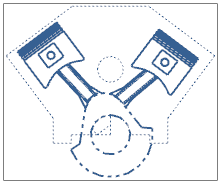

右击俯视图边界并选择样式。
点击定义视图的渲染集。
先从 CYLINDER BLOCK 开始，您创建的各个渲染集将以显示在视图中的有序渲染集列表框中的顺序应用到视图。
CYLINDER BLOCK
CRANKSHAFT
PISTONS_RODS
由于 PISTONS_RODS 是列表中的最后一个渲染集，它的显示属性是最后一个应用到视图中的属性，要使曲轴部件以 CRANKSHAFT 渲染集的颜色、线型以及线宽设置显示，您必须重新排列列表的顺序。
选择 CRANKSHAFT，然后点击下移，使您的渲染集顺序如下所示：
|
视图中的有序渲染集 |
|
|
CYLINDER BLOCK |
|
点击两次确定。

渲染集 CRANKSHAFT 将在所有其它渲染集之后应用到视图，所以现在曲轴部件将以该渲染集的颜色、线型以及线宽设置显示。